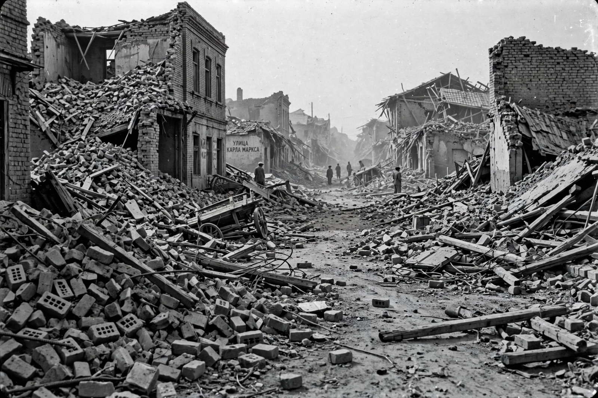

1948 Ashgabat earthquake

The 1948 Ashgabat earthquake struck the city of Ashgabat (Ashkhabad), capital of the Turkmen Soviet Socialist Republic, on the night of 5–6 October 1948. With a magnitude of about 7.3, it remains one of the deadliest earthquakes of the 20th century and almost completely destroyed the city.
Soviet censorship long suppressed information about the disaster, and the death toll remains uncertain decades later.
The disaster
The earthquake occurred at about 2 a.m. local time, collapsing the city's predominantly mud-brick and masonry buildings as residents slept. Brick and adobe construction, wholly unsuited to strong shaking, was the principal killer. Much of Ashgabat had to be rebuilt from near zero during the following years.
Estimates of the death toll vary enormously — from about 10,000 to well over 100,000 — reflecting the secrecy of the era, the destruction of records and the lack of independent reporting. Figures around 110,000 are often cited in later sources, but the true toll is unknown.
Setting
Ashgabat lies at the foot of the Kopet Dag mountains, close to the active fault systems where the Arabian and Eurasian plates converge through Iran and Turkmenistan. The region has a long history of destructive earthquakes, a hazard recognised in the Soviet seismic zoning that the 1948 disaster reinforced. See also Seismology.
See also: Earthquake · Seismology · Plate tectonics · Natural disaster